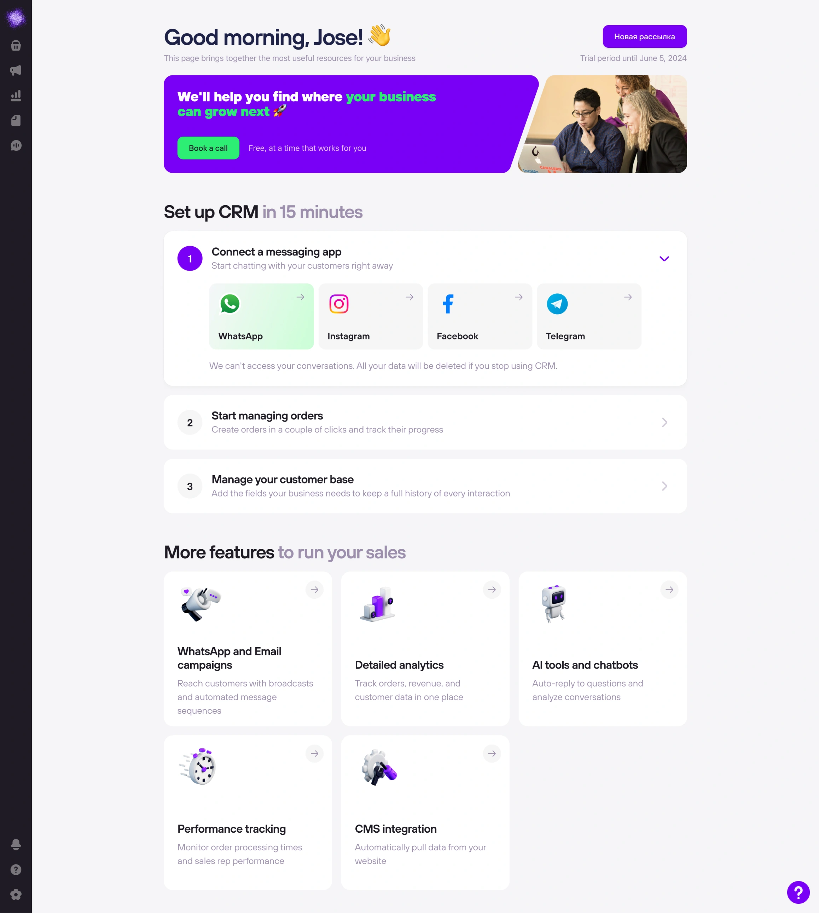
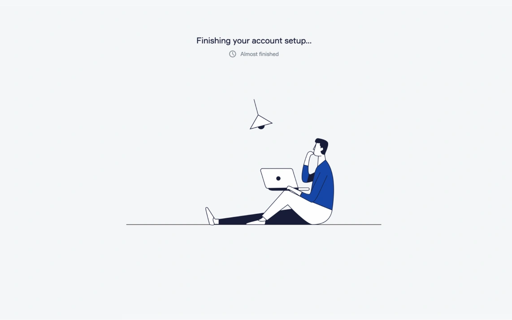
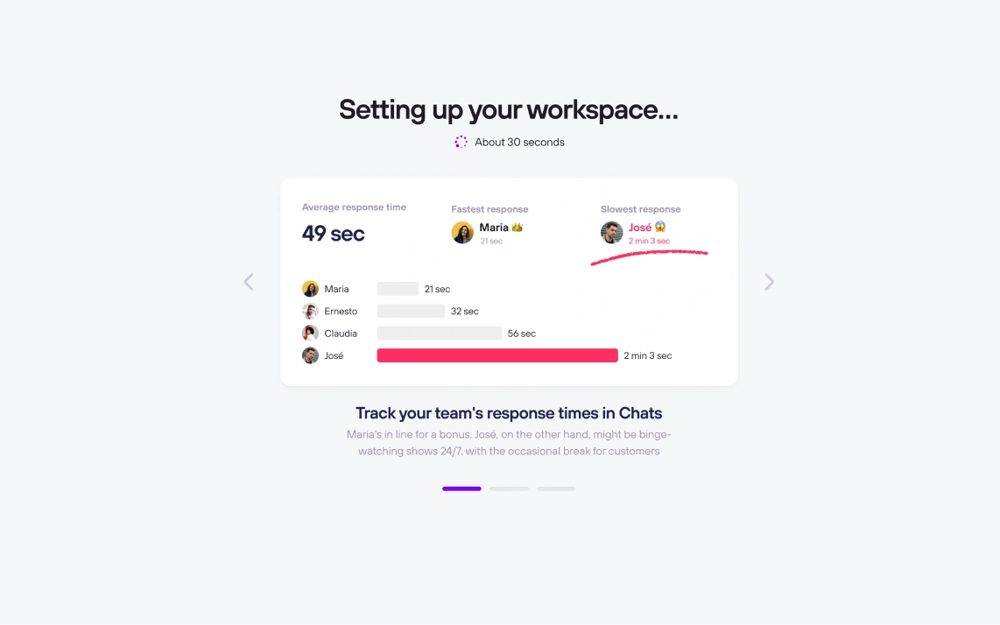
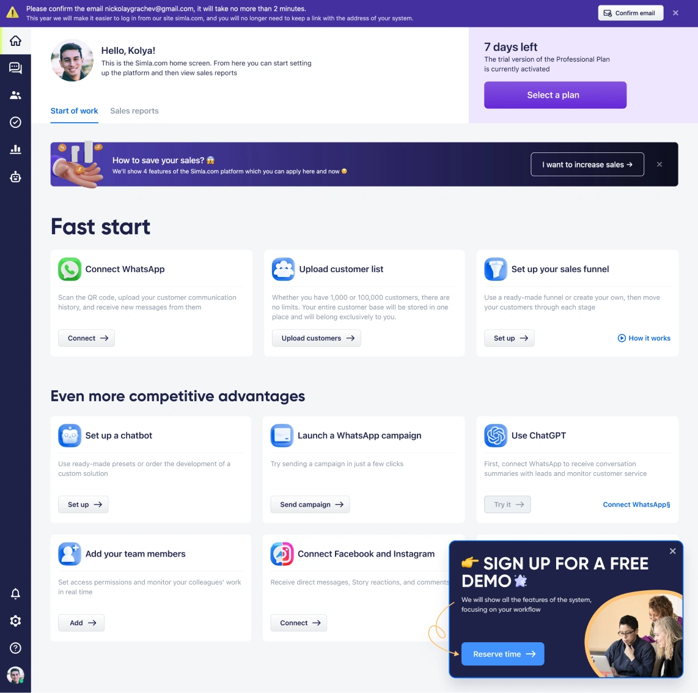
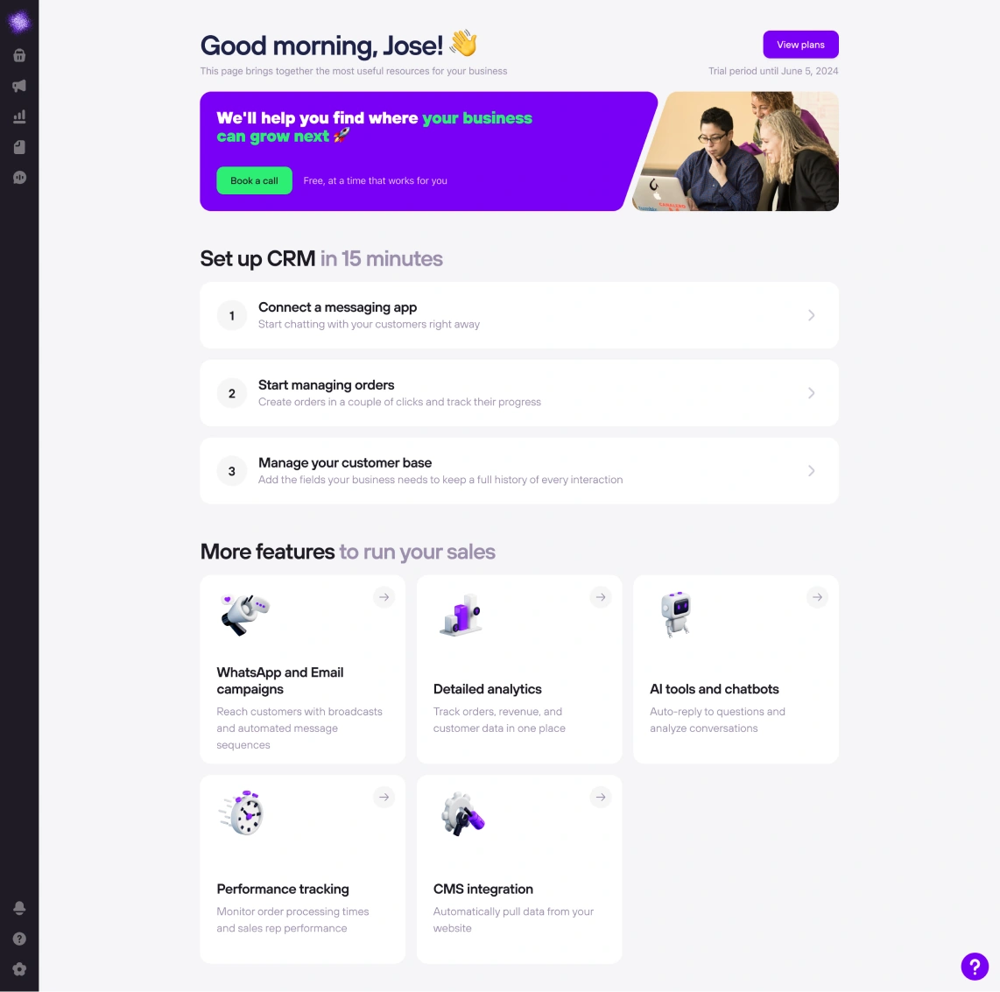
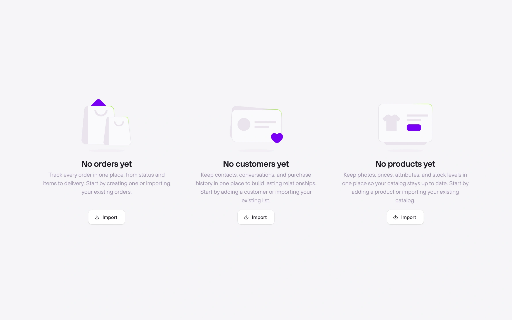
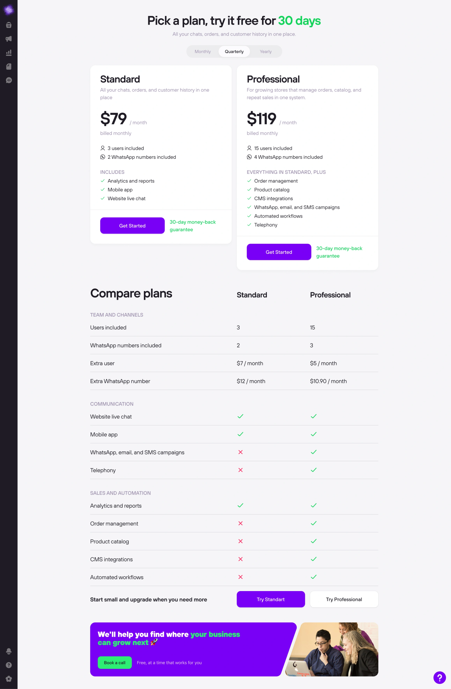
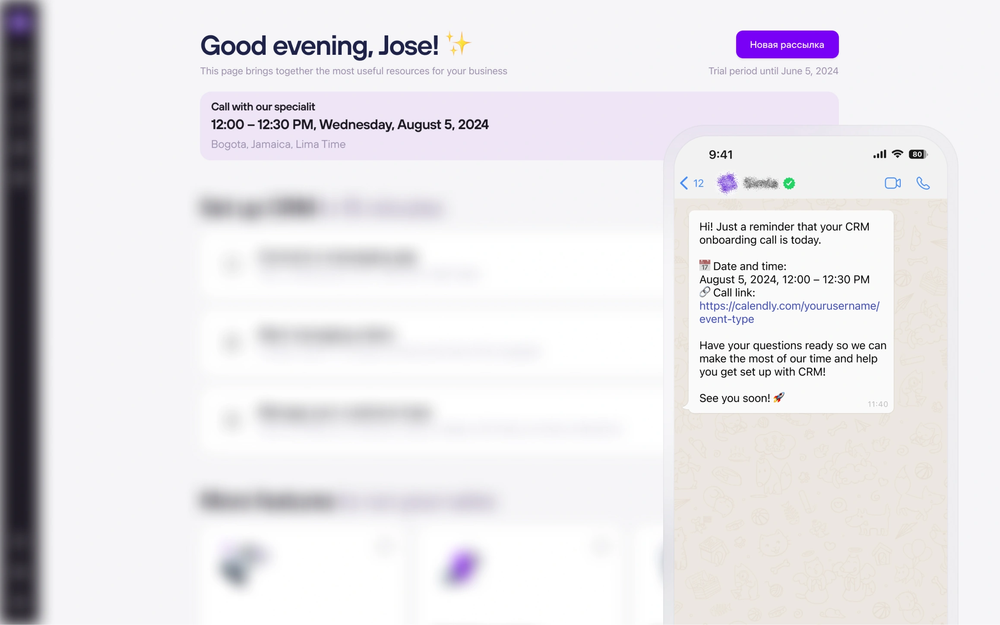

Онбординг в CRM и рост конверсии в консультации с sales-менеджером

Контекст
CRM для малого бизнеса, который продаёт через мессенджеры. Большая часть продаж идёт через звонок с менеджером: он помогает настроить систему и подобрать тариф.
Проблема
Из регистрации в оплату доходили 0,7% пользователей, это намного ниже бенчмарков для CRM. После регистрации человек ждал загрузку системы, а потом попадал на перегруженный главный экран: больше десяти карточек, баннеры и попап с одинаковым весом.
Задача
Переработать путь после регистрации, чтобы пользователь быстрее увидел ценность CRM, записался на звонок с менеджером и дошёл до оплаты.
Что я сделал для решения
- Синхронизировался с командой sales-менеджеров и собрал инсайты о пользователях
- Собрал CJM по основным сценариям после регистрации
- Спроектировал решения
- Провёл ретроспективу после запуска
Решение 1
Заменил пустой экран загрузки на карусель с примерами того, как CRM помогает бизнесу
Аргумент
- Система загружается около 30 секунд. Раньше пользователь просто ждал, а теперь за это время видит, какие задачи решает CRM
- Примеры построены на живых сценариях, например скорости ответа менеджеров, поэтому польза понятна без объяснений
- Пользователь заходит в систему, уже понимая, зачем она ему


Решение 2
Пересобрал главный экран вокруг двух действий: записи на звонок с менеджером и быстрой настройки
Аргумент
- Большинство продаж идёт через менеджера, поэтому главный баннер предлагает созвониться, а не конкурирует с десятком других карточек
- Подключение мессенджера стоит первым шагом: это самый быстрый способ попробовать чаты в одном окне и увидеть ценность CRM
- Остальные функции вынесены ниже и не отвлекают от главного


Решение 3
Сделал zero-states, которые объясняют, зачем нужен раздел
Аргумент
На пустом экране пользователь понимает, что можно делать в разделе, а не видит пустую таблицу

Решение 4
Перенёс страницу тарифов внутрь продукта
Аргументы
- Не нужно уходить на сайт, поэтому на пути к оплате меньше точек отвала
- Если выбрать всё-таки сложно, внизу есть запись на звонок, и сомневающиеся уходят к менеджеру, а не из продукта

Решение 5
Добавил напоминание о звонке в WhatsApp и карточку с записью на главном экране
Аргумент
- Напоминание приходит в мессенджер, которым пользователь и так пользуется каждый день, поэтому меньше пропущенных звонков
- Ссылка на звонок есть прямо в сообщении, поэтому подключиться можно в один клик
- На главном экране видно дату и время звонка в часовом поясе пользователя, и о нём сложно забыть

Результат
Конверсия из регистрации в оплату выросла с 0,7% до 1,7%. После регистрации пользователи стали дольше изучать систему.
Конверсия считается от всех регистраций, включая тех, кто зашёл просто посмотреть. Продукт продаётся через менеджера, поэтому главный показатель — сколько людей доходит до звонка, а оплата случается уже после него.